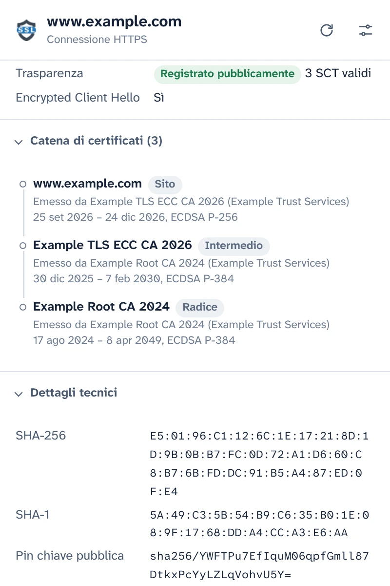
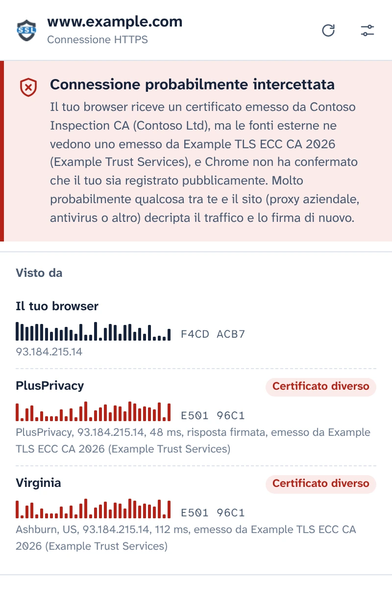
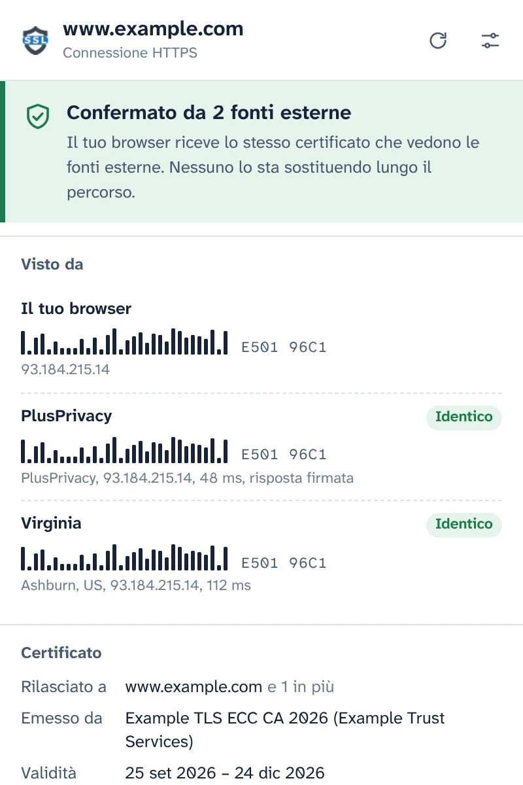
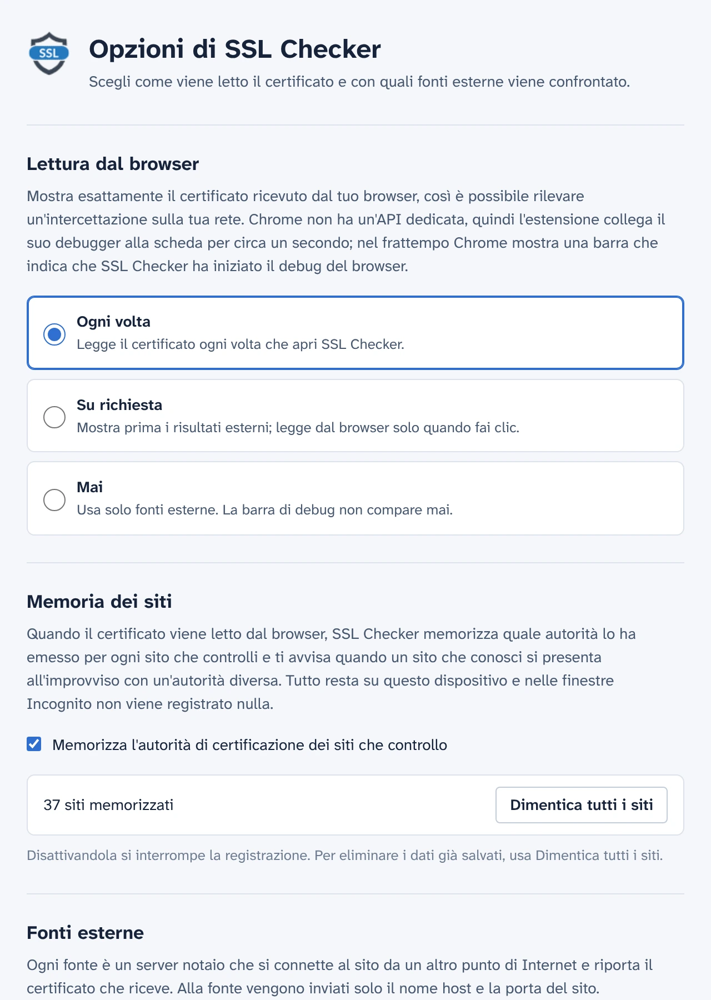

Vedi il certificato che il tuo browser ha davvero ricevuto
SSL Checker legge il certificato del sito nella tua scheda direttamente da Chrome e lo confronta con ciò che vedono notai indipendenti da altri punti di Internet. Se non coincidono, qualcosa tra te e il sito lo sta sostituendo.
Gratuito e open source. Nessun account, nessuno strumento di analisi.
Confermato da 2 fonti esterneConnessione probabilmente intercettata
Il tuo browser riceve lo stesso certificato che vedono le fonti esterne. Nessuno lo sta sostituendo lungo il percorso.Il tuo browser riceve un certificato emesso da Contoso Inspection CA, ma le fonti esterne ne vedono uno emesso da Example TLS ECC CA 2026.
- Il tuo browser E501 96C1F4CD ACB7
- PlusPrivacy IdenticoCertificato diverso E501 96C1
- Virginia IdenticoCertificato diverso E501 96C1
Ogni dettaglio della connessione
Ciò che Chrome ha ricevuto per questa scheda, letto dal browser stesso anziché scaricato di nuovo da un server.
- Nomi coperti, emittente, validità e giorni rimanenti, livello di convalida (DV, OV, EV)
- Versione TLS, scambio di chiavi inclusi gli ibridi post-quantistici, cifrario ed Encrypted Client Hello
- Stato di Certificate Transparency e timestamp firmati dei certificati
- La catena completa, le impronte e ogni estensione. Copia il PEM o scarica la catena.

Rileva l'intercettazione HTTPS
I proxy aziendali, la scansione HTTPS degli antivirus e gli attaccanti sulle reti Wi-Fi pubbliche funzionano allo stesso modo: decriptano il tuo traffico e consegnano al tuo browser un loro certificato. La pagina sembra normale e il lucchetto resta.
SSL Checker chiede al notaio PlusPrivacy, e a ogni notaio che aggiungi, quale certificato mostra loro lo stesso sito. I notai si connettono da altri punti di Internet, aggirando qualunque cosa si trovi sulla tua rete, e le impronte vengono confrontate:
- Stesso certificato ovunque: confermato.
- Il tuo è diverso e non registrato pubblicamente: probabile intercettazione. SSL Checker indica l'autorità che ha emesso il sostituto e riconosce i prodotti di ispezione noti.
- Le fonti non concordano tra loro: viene segnalato come tale, con il possibile significato di ciascun caso.

Risposte che nessuno lungo il percorso può falsificare
Qualcosa che intercetta il tuo traffico potrebbe anche provare a rispondere a nome di un notaio. Non può riuscirci: il notaio PlusPrivacy firma ogni risposta con Ed25519 e SSL Checker verifica la firma, un numero casuale inviato con ogni domanda e il sito per cui ha chiesto. Una risposta falsificata, riutilizzata o reindirizzata viene rifiutata e il popup indica che qualcosa l'ha modificata.
Installa il tuo notaio
Il notaio è open source: un piccolo servizio Node.js per Docker, protetto contro le raffiche di richieste e contro le richieste verso reti private. Installalo su qualsiasi server, aggiungi il suo indirizzo e la sua chiave in Opzioni e le sue risposte verranno verificate allo stesso modo.

Decidi tu quando usare il debugger
Chrome non ha un'API per le estensioni che fornisca il certificato di una pagina caricata, quindi SSL Checker collega il debugger di Chrome alla scheda per circa un secondo mentre lo legge, e nel frattempo Chrome mostra la sua barra di debug. In Opzioni scegli quando succede:
- Ogni volta che apri il popup
- Su richiesta, con un clic nel popup
- Mai: vengono interpellati solo i notai
Ricorda i siti che controlli
SSL Checker memorizza quale autorità di certificazione usa ogni sito e ti avvisa quando un sito che conosci si presenta all'improvviso con un'altra, ad esempio su una nuova rete Wi-Fi. Questa memoria resta sul tuo dispositivo, non viene mai usata nelle finestre Incognito e può essere disattivata o cancellata in Opzioni.

Privacy fin dalla progettazione
- Nulla viene letto o inviato finché non dai il tuo consenso nel popup.
- Solo il nome host e la porta del sito lasciano il tuo dispositivo, nel corpo di una richiesta HTTPS ai notai che usi.
- Il notaio PlusPrivacy non conserva alcuna traccia dei siti controllati. Puoi disattivarlo o interpellare solo notai gestiti da te.
- Nessuno strumento di analisi, nessun tracciamento, nessun account. La memoria dei siti non lascia mai il tuo dispositivo.
- Neanche questo sito web usa strumenti di analisi, e non carica nulla da altri server.
POST /v1/cert
Content-Type: application/json
{
"host": "www.example.com",
"port": 443,
"nonce": "Xq3MpTb0vR9kLs2eWn5yZA"
}